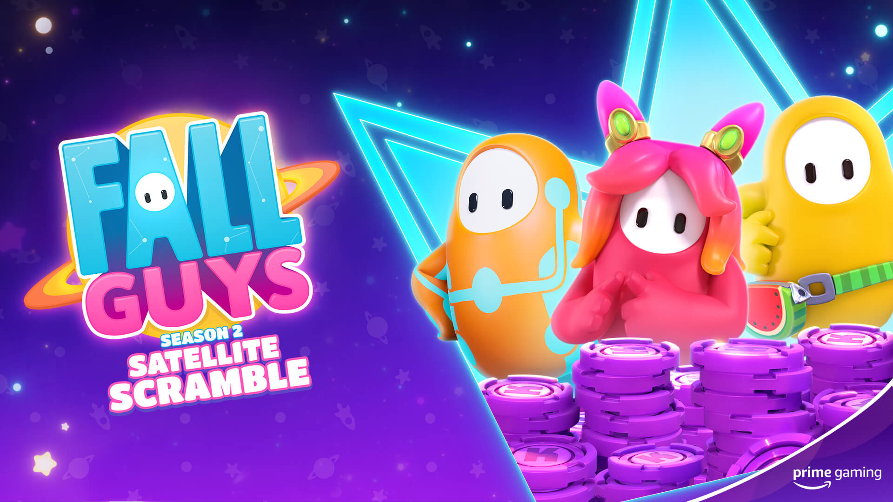
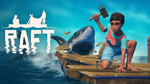
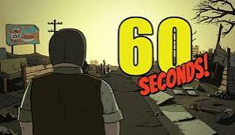
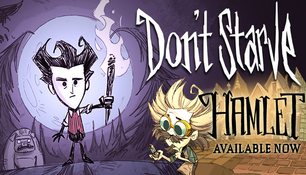

1. Fall Guys

Fall Guys is a cross platform, multiplayer, party game. It has different modes such as solos,
duos, and squads. You play against other people in order to be the last person standing.
It is a great game and I really recommend this game for people who like racing and customizing
without the use of cars.
2. Raft

Raft is a first person game where you build up your raft and survive. You can search for
items in the water and on islands as well. you can play alone or as a team.
It is a great game and I really recommend this game for people who want a challenge and
like crafting to survive.
3. Terraria

Terraria is a 2D sandbox game featuring single-player and multiplayer modes that concentrates
upon exploration, construction, crafting, battle, survival, and mining. The game's 2D
sprite-tile-based graphics are evocative of the Super NES's 16-bit sprites. The game is
praised for its timeless exploration-adventure gameplay, which is reminiscent of titles
like the Metroid series and Minecraft.
It is a great game and I really recommend this game for competitive people who want a challenge.
4. 60 Seconds

60 Seconds is a survival game where you collect items you need to survive with only 60 seconds
to get them to the shelter. Then your task now is to survive the apocolypse
It is a great game and I really recommend this game for strategic people who want a challenge.
5. Don't Starve

Don't Starve is an action-adventure game featuring a randomly generated open environment with
elements of survival and roguelike gameplay. While other actions are managed by the keyboard
or by utilizing the built-in gamepad compatibility to play with a controller, combat is handled
by pointing and clicking with the mouse or by employing "force attack," giving the game a
console-like feel. The aim is to survive as long as possible, and a count of the number of days
the player has survived, as well as the season, is displayed onscreen.
It is a great game and I really recommend this game for competitive people who like action and
adventure.
6. The Forest

The Forest is a game in which players take control of Eric LeBlanc, who must live on a wooded
peninsula in search of his son Timmy following a catastrophic plane accident. By constructing
a shelter, weapons, and other survival items, players must survive. A clan of cannibalistic mutants
who live in communities on the peninsula's surface and deep caves underneath it live there with
diverse wild species. They may not always be hostile toward the player, but their typical demeanour
is antagonistic, especially at night.
It is a great game and I really recommend this game for competitive people who like story based games.